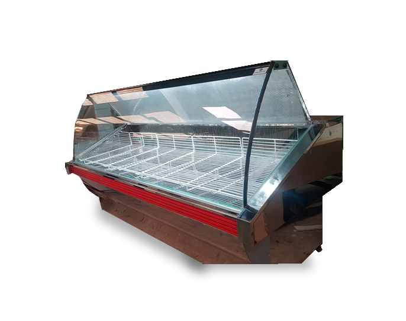
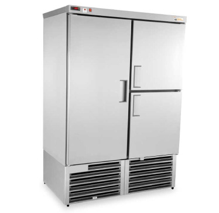
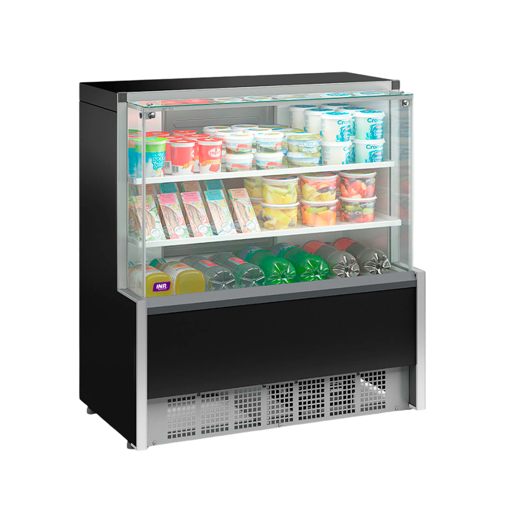

Heladera Expositora Vertical
Ideal para bebidas y productos lacteos. Capacidad de 400 litros.
Precio: $870.000
Heladeras profesionales para tu negocio
Somos especialistas en equipos de refrigeracion comercial. Ofrecemos heladeras de alta calidad para restaurantes, supermercados, farmacias y mas.
Ideal para bebidas y productos lacteos. Capacidad de 400 litros.
Precio: $870.000
Perfecta para carnicerias y panaderias. Acero inoxidable.
Precio: $1.000.000

Para almacenamiento a largo plazo. Rango de temperatura: -18°C a -25°C.
Precio: $8.900.000

Para pastelerias y restaurantes. Puerta de vidrio con luz LED.
Precio: $3.700.000

ColdMax cuenta con mas de 15 años de experiencia en el mercado de refrigeracion comercial. Trabajamos con las mejores marcas y ofrecemos garantia en todos nuestros productos.
Telefono: +54 431127
Email: ventas@coldmax.com
Direccion: Av. San Martin 466, Ciudad